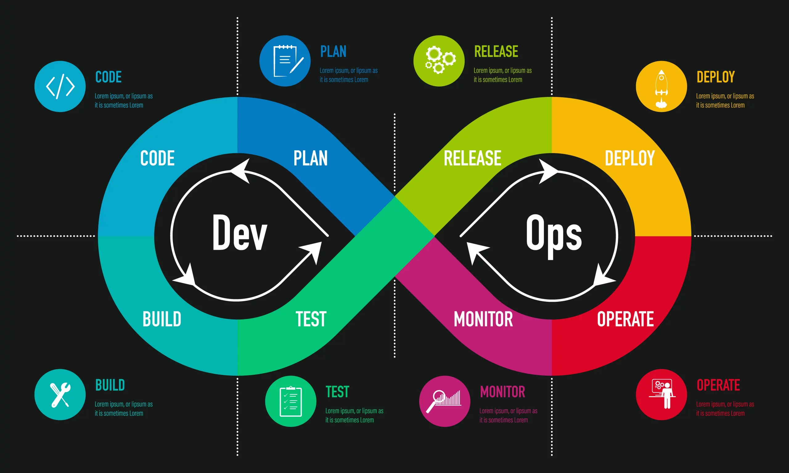

Le profil DevOps est le plus recherché par les recruteurs. Il est au carrefour du développement informatique et des infrastructures.
En effet, le développeur a pour mission de créer et de faire évoluer des applications, parfois au détriment de leur performance et de leur stabilité.
Quant aux ops, ils se chargent de la mise en production des logiciels en assurant ensuite leur disponibilité et leur temps de réponse.
Les deux métiers fonctionnent à contre-courant. Mais avec le développement du cloud et du télétravail (développement d'applications à distance), le bon fonctionnement des infrastructures web est devenu crucial. Ces deux métiers ont donc été amenés à travailler main dans la main et ont engendré un nouvel intitulé tech : le DevOps.
L'enjeu du DevOps est de prendre en compte les contraintes de déploiement dès la phase de programmation, tout en appliquant les méthodes agiles par des livraisons en continu sur des cycles courts.
|  |